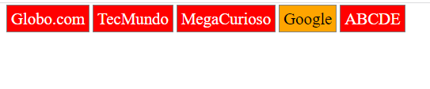
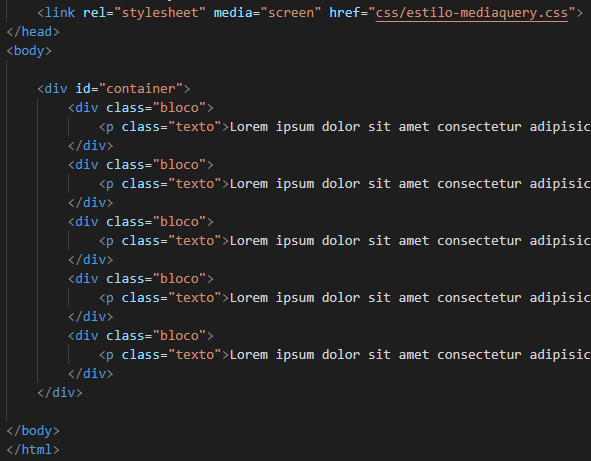

Aula 6
Objetivo: Aprendizagem de Menus, estilos de links, media query e responsividade.
Manipulando algumas propriedades do CSS, podemos modificar links clicáveis no site, criar listas que mudam de cor ao passar o mouse por cima(propriedade hover) e criar uma responsividade.
Modificando links
Para modificar um link nunca visitado, basta utilizar link:a e definiir as novas cores desejadas. Ja para um link nunca visitado, será link:visited depois basta novamente escolher o novo estilo para o link. Para mudar ambos é só definir apenas a tag a.
A propriedade hover é somente para animação, por exemplo a mudança de cor quando passamos o mouse por cima. Para usar é só digitar a:hover e assim definir como você quer a sua animação, especificamente para aquele link. Segue abaixo um exemplo de código.
No CSS externo:
Observando os comentários nos códigos acima já dá para entender que foi criado uma lista de links modificados. O links visitados e nunca visitados terão letra branca e fundo vermelho(olhando o a:link e a:visited no CSS). Terão também fontes, bordas e espaçamentos específicos (olhando o a no CSS). Passando o mouse por cima dos links, a cor da fonte será preta e possuirá um fundo laranja. Veja só o resultado:

Menus horizontais e verticais
Baseando no que já foi explicado acima, podemos criar menus com animações que darão um novo design moderno à página web do seu site. Para fazer isto é simples, basta criar a tag ul e dentro dela os items serão os links que iremos modificar no CSS. Segue abaixo um exemplo utilizando um menu horizontal.
No CSS externo:

Observando o CSS externo, podemos ver o estilo da lista, do item da lista, do link e como ficará ao passar o mouse por cima. Veja o resultado:
No menu vertical serão os mesmo procedimentos, porém iremos utilizar a propriedade display:block para que os items fica abaixo um do outro. Também é possível colocar imagem como background, conforme o exeplo abaixo.
No CSS externo
Resultado
Percebeu que o design fica bem mais moderno? Agora é sua vez de testar!
Media Query
Uma media query consiste de um media type e pelo menos uma expressão que limita o escopo das folhas de estilo usando media features, tal como largura, altura e cor. Media queries, adicionadas no CSS3, deixam a apresentação do conteúdo adaptado a uma gama especifica de dispositivos não precisando mudar o conteúdo em si.
Para utilizar o media query iremos fazer um flexbox(aula 6), criando o container que é a div principal e seus itens que estão numa div também. Vejamos o código abaixo.

No CSS externo
Resultado
Adicionando responsividade
Design Responsivo é uma técnica de estruturação HTML e CSS, que consiste em adaptar o site ao browser do usuário sem que seja necessário definir várias folhas de estilos especíificaspara cada resolução, ou seja, é um tipo de design onde o layout fica fluído e variante de acordo com a resolução do usuário.
Esse tipo de design responsivo teve origem em 2010 com o objetivo de melhorar a experiência de navegação dos usuários de páginas web. Segue o exemplo no CSS do código exemplificado anteriormente.
Muitos desenvolvedores criam seus websites com códigos sujos, muitas vezes gerados automaticamente por softwares e IDEs que ajudam os iniciantes na criação dos projetos.
É extremamente importante que nessa nova fase de sites responsivos, que os desenvolvedores façam seus códigos limpos e que escrevam apenas códigos que serão usados de fato. Faça códigos o mais simples possível, evitando exageros desnecessários.
Para designs responsivos você precisa ter foco nas condições de width, onde dependendo da largura do conteúdo de seu cliente, ou seja, dependendo da resolução do dispositivo que seu cliente estiver acessando o website, irá ser carregada uma folha de estilos diferente ou uma folha de estilo específica.
Para entender um pouco mais sobre responsividade, acesse o site.
Chegamos ao fim da sexta aula do curso e quarta aula de tech, foram muitas informações mas calma que no fim tudo fará sentido. O segredo é praticar.
Bons estudos!